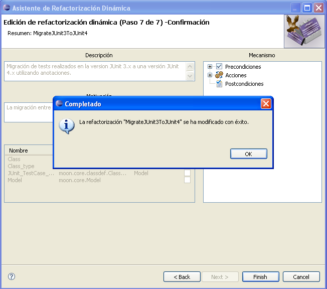

Editar Refactorizaciones
Editar Refactorizaciones
En esta sección aprenderá cómo modificar una refactorización dinámica existente del conjunto
de refactorizaciones disponibles.
- Seleccione la opción de menú Refactorización Dinámica > Editar
Refactorización... en Eclipse para iniciar el asistente de edición.

Opción "Editar Refactorización..."
- Se mostrará una lista con las refactorizaciones dinámicas disponibles. Seleccione la que desea modificar.
Según seleccione refactorizaciones en la lista de la izquierda, verá en la parte derecha un breve resumen
con la descripción, la motivación y la imagen asociadas a la refactorización seleccionada.
Refactorizaciones disponibles
- Una vez que haya seleccionado una refactorización para editar, deberá recorrer paso a paso un asistente
que le guiará a través del proceso de edición. El asistente es idéntico al utilizado en el proceso de
creación de refactorizaciones, con la diferencia de que ahora los campos aparecerán ya completados con
la información asociada a la refactorización que se esté editando.
Vea la sección Crear Refactorizaciones para obtener información detallada
acerca de cómo completar los campos del asistente.
- Llegado el quinto paso, pulsar el botón
Finalizar guardará los cambios que se hayan efectuado
en la refactorización. Un mensaje de confirmación le informará si la refactorización se ha guardado con éxito..

Refactorización modificada